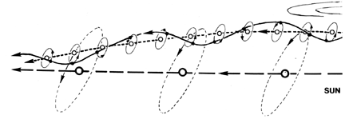

Fig. 1130.24 Reality is Spiro-orbital: All terrestrial critical path developments inherently orbit the Sun. No path can be linear. All paths are precessionally modulated by remotely operative forces producing spiralinear paths.
Copyright © 1997 Estate of R. Buckminster Fuller